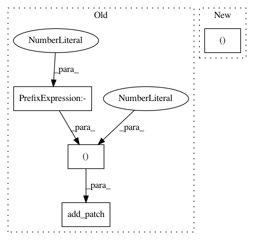

6d87b5fa03420a908fbf7e72868307dd6bc3223f,intro/matplotlib/examples/plot_multiplot.py,,,#,10
Before Change
// Add a title and a box around it
from matplotlib.patches import FancyBboxPatch
ax = plt.gca()
ax.add_patch(FancyBboxPatch((-0.05, .72),
width=.66, height=.34, clip_on=False,
boxstyle="square,pad=0", zorder=3,
facecolor="white", alpha=1.0,
transform=plt.gca().transAxes))
plt.text(-0.05, 1.02, " Multiplot: plt.subplot(...)\n",
horizontalalignment="left",
verticalalignment="top",
After Change
plt.subplot(2, 3, 4)
plt.xticks(())
plt.yticks(())
plt.subplot(2, 3, 5)
plt.xticks(())
In pattern: SUPERPATTERN
Frequency: 3
Non-data size: 4
Instances
Project Name: scipy-lectures/scipy-lecture-notes
Commit Name: 6d87b5fa03420a908fbf7e72868307dd6bc3223f
Time: 2016-09-15
Author: gael.varoquaux@normalesup.org
File Name: intro/matplotlib/examples/plot_multiplot.py
Class Name:
Method Name:
Project Name: matplotlib/matplotlib
Commit Name: 98ab2a07920610dae862d95363243572a84ea2c7
Time: 2020-06-16
Author: tcaswell@gmail.com
File Name: lib/matplotlib/tests/test_patches.py
Class Name:
Method Name: test_large_arc
Project Name: matplotlib/matplotlib
Commit Name: d67550cee52588a9ff3cff49fbc45b0d878bca9a
Time: 2020-06-16
Author: tcaswell@gmail.com
File Name: lib/matplotlib/tests/test_patches.py
Class Name:
Method Name: test_large_arc